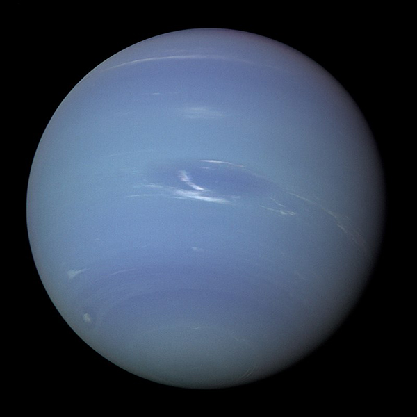
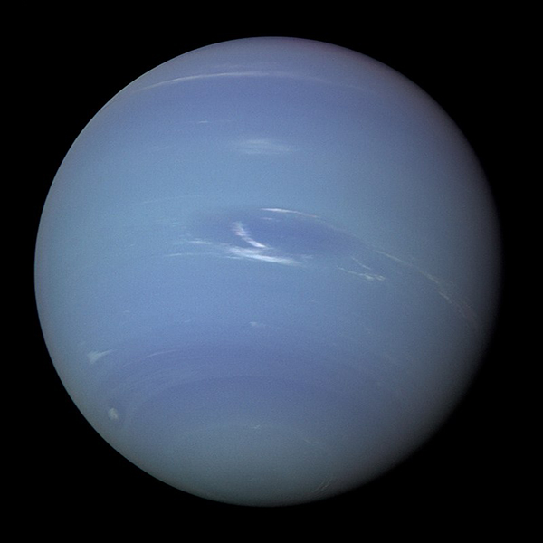

Planet Slideshow
Mercury
Mercury is the smallest and innermost planet in the Solar System. Its orbit around the Sun takes 87.97 Earth days, the shortest of all the planets in the Solar System. It is named after the Greek god Hermes (Ερμής), translated into Latin Mercurius Mercury, god of commerce, messenger of the gods, mediator between gods and mortals.


 
